Our planned trip to Munich for this year was due to be on October 18th. Due to the way that the fixtures came out, we were able to sandwich that trip in between two Sunderland away games in Portugal on the Thursday before and in Poland on the Thursday after. We had somehow managed to get tickets for both games. We started the trip with a visit to Millwall to watch Swansea.
Tuesday 13th October Not the best start to the trip. Due to roadworks on the A339, the 8:58 bus was about half an hour late and the same roadworks caused further delays by the time we reached Basingstoke. We eventually got to the station at about 10:10. There was a bit of a wait for the next train to Clapham Junction so we got on a train to Woking. This proved to be a good move as we were sat opposite "The Bear Ladies"
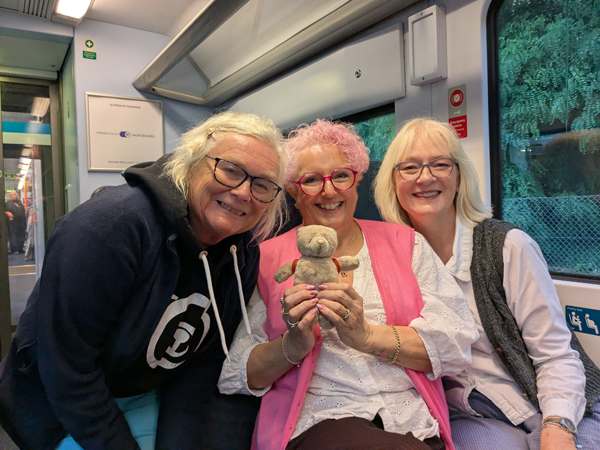
At Woking, we got straight on train to Clapham and then another to Gatwick Airport. We got to Gatwick at about 11:45. We had booked a room for tonight at the Hilton, about a five minute walk from the station. We were initially told that we would have to wait for a room but after Roz explained we were going straight back into London, we were given a family room straight away. We left our things in the room, walked beck to the station and got another train to London Bridge.
We met Eggy in The Shipwrights Arms and had a couple in there before moving on. We stopped for a drink in The Horseshoe and then spent a couple of hours in The Royal Oak where we were joined by Uppy and a couple of Eggy's mates. At about 5:30 we walked back towards the station and had a couple in The Old Kings Head. Roz and I went off and got something to eat before getting the 19:01 train to South Bermondsey. We met up with everyone again in the ground.
The game was quite exciting. Although Millwall had a lot more of the ball, Swansea scored a late winner and remain at the top of the championship. We did not hang around long at the end but got straight on a train back to London Bridge. We bought sandwiches and got another train back to Gatwick. Back in the hotel before 11.
Wednesday 14th October We were up by 7ish and checked out of the hotel at about 8:30. We walked back to the airport, went through security and bought breakfast to eat while we waited to board. Our TAP flight to Lisbon was due to leave at 10:35 and left about 10 minutes early. The plane was totally full with a mixture of Sunderland and Celtic who play Benfica tomorrow) fans.
We landed early just before 13:00. Getting through immigration was fairly quick despite rumours of long queues. We collected our luggage and walked out to the car hire desks. There were no queues here and everything was quite efficiently organised. We collected the keys to our car and were on the motorway heading North by 14:00.
We had a drive of just over 80 minutes to get to Leiria. We found the Ibis and after deciding against trying to get the car through the narrow entrance to the underground car park, found a free public car park next . By 16:00 we had checked in.
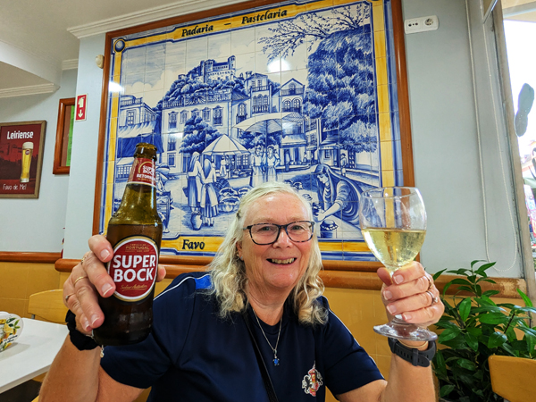
After an hour or so in the room, we went out for the evening. We walked about a mile to get into the main square where most of the Sunderland fans were gathering. We went into a small cafe type place for a snack and ended up staying there for the rest of the evening. We bought a few croquette type things and decided we may as well have a drink. The drinks were very cheap and we managed to get a table outside so we there was not much point in moving. It was all a bit lively when we got there but quietened down a bit as people started going back to where ever they were staying. We stayed until 9ish and walked back to the hotel. We had not really eaten enough food for the amount of alcohol we had consumed so were quite pissed by the time we got back.
Thursday 15th October - Torreense v Sunderland We were up at about 9 and walked back into the centre for breakfast. We stopped at a cafe just before we got to the square for a croissant and a couple of toasted sandwiches. After we had eaten, we did a bit of sight-seeing. We went to the cathedral and then up to the castle which is probably the highlight of the sights here. It also gave us our first view of the ground where Sunderland will be playing later.
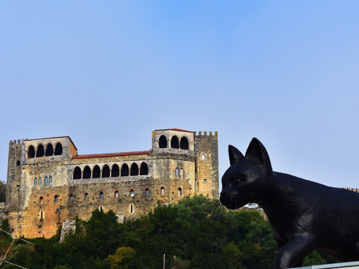
We walked down from the castle back through the square and returned to the hotel for showers.
At 12:45 we went down and had our welcome drink in the bar. We then walked back into the centre stopping for a couple of drinks on the way. By this time, places were already starting to run out of beer. The place where we had eaten breakfast had run out so we returned to the bar we had been in last night. We managed to get a couple of rounds in there before they too ran out. The square was totally packed with Sunderland fans. After we left the square we tried to find somewhere else to get a drink and were also looking for food. We eventually found a kebab shop and had their last kebab between us with a couple more beers. At about 4:45, we made our way to the ground.
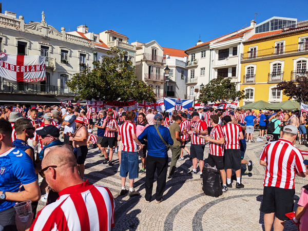
The ground was only a 10 minute walk away and was a much easier to get into than Lens was a couple of months ago. When we arrived at the ground, we were right by our entrance so did not need to spend 45 minutes trying to work out how to get in! We had very good seats near the half way line and were surrounded by Sunderland fans. Given that we had had to buy tickets from Torreense, they could not have been much better. The game was not the best but Sunderland scored an injury time winner having been a goal down in the first half. The perfect way to win the match. We stayed at the end to applaud the players and then made our way back into town.
We found another bar near the kebab shop. They were only serving beer in plastic glasses but they were selling bottles of wine for €10. We had been thinking of going for a pizza. The nearest pizza place was take-away only so I walked to collect one and we ordered a second bottle of wine. We had a couple more drinks in another bar in the square before walking back to the hotel.
Friday 16th October We walked back into the square for breakfast and returned to the hotel to check out. We left at about 10:15 and were just about at the airport by 11:30. We had a few problems first getting in to the petrol station and then getting the pump to work but we just got the car back to the hire car return area by midday.
We got the shuttle bus to Terminal 2 where we discovered that not only does our flight go from Terminal 1, but it had also been delayed by more than 5 hours. It was supposed to depart at 14:00 and had been delayed until 19:20. We did not really know if there was anything that we could do about this so we got the shuttle bus back to Terminal 1 and went through security. I tried to find someone to talk to about alternative flights and was told to phone easyJet customer services. I was not too hopeful of this achieving anything but the man I spoke to was surprisingly helpful and managed to get us on the 17:00 flight. Not ideal but better than waiting an additional two and a half hours.
We then had to try and get replacement boarding cards which involved us both having to exit the departures area and go to the easyJet check-in counter before going back through security again. By 15:00, both had our boarding cards for the new flight which was quite fortunate as by now, our original flight had been completely cancelled. We were both hungry by now so went to McDonalds for a late lunch. By the time we had finished eating, there was not too much time before our gate was announced. We went to the gate at about 16:15 and thankfully, the plane departed on time.
We arrived in Milan Malpensa at 20:30, slightly ahead of our revised schedule. We walked to the train station and managed to get onto the 21:04 train to Saronno. We thought we would have a bit of a wait here but as we were getting off the train we saw that a train was due to leave for Como Lago in a couple of minutes. We ran across to the platform and managed to get this train. Just before 22:30, we arrived in Como. Not quite as early as we had originally planned but a lot earlier than it could have been.
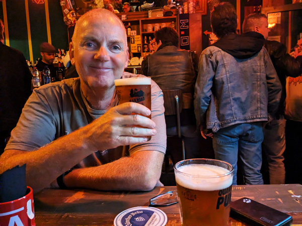
When we got off the train we were about 15 minutes walk away from our apartment but 2 minutes walk from Bar Cornobobò. This was the craft beer bar we had found when we were here four years ago. We went there and had a couple of beers before walking to the apartment. We stopped at a supermarket to buy food but were unable to buy alcohol as it was after 23:00. Our apartment was just across the road from the supermarket. We had a few problems getting the keys as the instructions were not really in the right order but by midnight we were in. I did go out for a walk again to see if there was anywhere I could buy wine but without any success. We ate some of the food we had bought, had showers and went to bed.
Saturday 17th October We went back to the supermarket to buy bread and orange juice for breakfast which we ate in the apartment. Apart from making use of the washing machine, we did not do much else for the rest of the morning. There was not too much around Como that we wanted to see as we were here four years ago and we were in need of a quiet day after quite a hectic start to the trip.
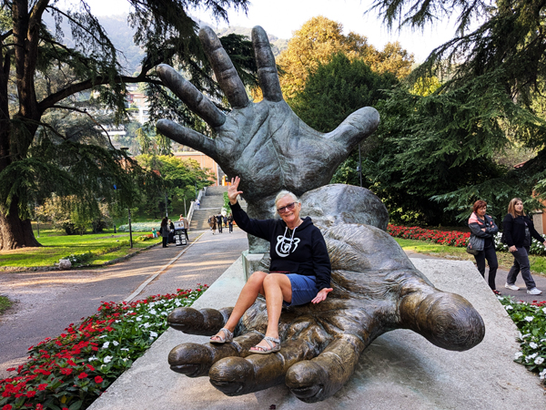
We did go out for a walk at 11:30. We first went to establish where our bus departs from tomorrow. We are on the 7:55 bus to Munich. We knew the bus leaves from outside Como S. Giovanniv but wanted to make sure we knew exactly where the Flixbus's departed from. We walked from there back into the main historic part of Como. We found the Cathedral and went inside for a look around. We it seen it from the outside before but did not go inside last time. All quite nice.
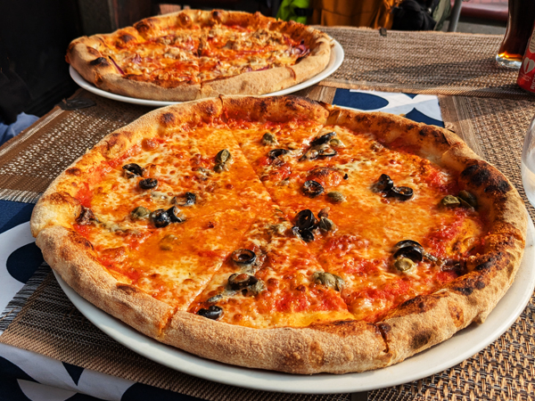
When we had finished with the old town, we went for a walk round the lake. We were surprised how many more people there were around than last time we were here. The footpaths were all very busy and there were long queues for the boat trips and funicular railway. When we had had enough of walking, we turned round and went back to the area by Como Lago bus station. We had a couple of very good pizzas for lunch at a fast food type place by the bus station and then walked back to the apartment stopping for ice-creams on the way.
The rest of the afternoon was spent in the apartment following the football. We had a pretty good stream of the Swansea v West Ham game so were able to watch the whole of that.
We had showers after the football and then had a couple of glasses of wine before going out. We had planned a quiet night this evening but we had missed our evening out yesterday so decided we may as well have a few drinks.
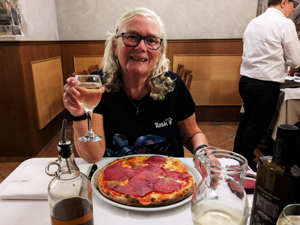
We went out at about 7:30 and walked back to Ristorante Pizzeria L'Orologio, the restaurant we had been to with Aleks and Andi a few years ago. We had excellent meals again even though we were eating our second pizzas of the day. After eating we went for a drink at Bar Cornobobò. After one in there we walked to il Birrivico, another craft beer bar round the corner from the apartment. I had seen this place when I was walking around last night and was keen to try it. It was an excellent looking bar but the service was terrible and we have up after about ten minutes of waiting for our drinks. We returned to the apartment and had a final glass of wine before bed.
Sunday 18th October We were up at 6:30, had showers, packed, and left the apartment an hour later. We walked to the bus station and the bus to Munich pulled in as we arrived. The bus was only half full and departed ten minutes early at 7:45. The bus was not a double decker like the ones we have been on before but was a lot more comfortable than the last one we were on between Vigo and Porto.
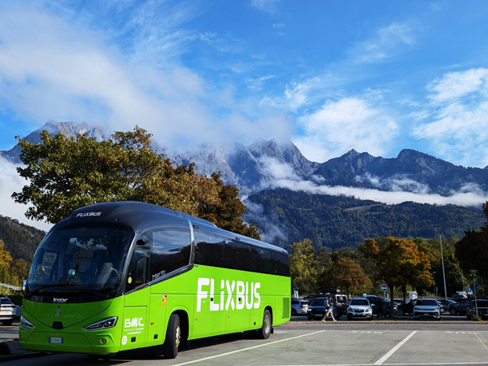
The first part of the journey was very scenic. We were in Switzerland within about 10 minutes of starting the journey and travelled North through The Alps. It took about four hours to get across Switzerland. We briefly entered Austria and crossed into Germany at about 12:45. Our penultimate stop was at Lindau by which time the bus was almost full and running about 15 minutes late. The latter part of the journey was not as scenic but we made up some of the time and were only about five minute late when we got into the bus station at Hackerbrücke at 14:45. As with our previous long distance journeys with FlixBus, this was had all been very enjoyable We walked to our usual Ibis and checked in. We were in the room just after 3.
We were the first to arrive in Munich so we did not go straight out. I went for a short walk while Roz watched the Bournemouth v Sunderland game. When I got back, I had my shower and watched most of the second half until Hoggy arrived. At this point, we abandoned the football and headed straight out to the Löwenbräukeller. By 5pm we had our first beers. We did not know what time Aleks, Andi and Frankie were arriving so we ordered food there while we waited. They turned up about an hour later and we all stayed there for a few more drinks.
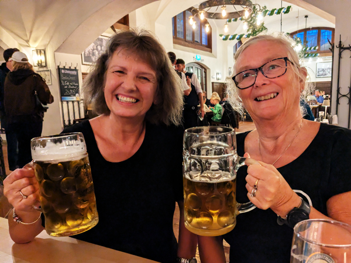
We left there and walked to Higgins Ale Works, a craft beer bar that we had not been in before. We had a couple in there before walking to Augustiner-Keller. We had planned to meet Dave and Regan there but tonight it was closing at 23:00, about the time they were due to arrive. We had a couple of drinks in there anyway and then walked back to the hotel and had a couple of drinks with them in the hotel bar.
Monday 19th October I went out to buy breakfast from Backwerk and we ate it in the room. We had arranged to meet everyone at the Chinese Tower beer garden today. Roz and I went out at 11:30 and had a look around the old town before walking out to the Englischen Garten. We were there by 12:45 and everyone else was also there on time. It was just about warm enough to drink outside today so we stayed there for a little over four hours. Just before 5, we all made our way to The Hofbräuhaus. We had another couple of litres in there by which time, things were starting to go a bit downhill.
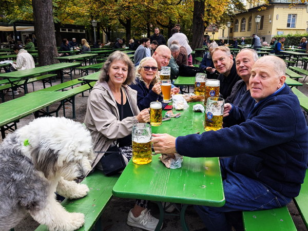
We were keen to go back to the "Standing Bar" that we had found last year. We had one in there while there was various amounts of going off looking for food, etc. Dave and Hoggy went for one in "The Tap Room" and we all ended up together again in Augustiner Stammhaus. Roz and I were back in the hotel by 10:45.
Tuesday 20th October Roz and I meet Alex, Andi and Frankie in reception at 9:30 and we all went for breakfast at a bakery somewhere underneath Karlsplatz. After eating, I left the others there and went out to the river for a walk. We had planned to start in the Viktualienmarkt at 13:00 but Roz had bumped into Dave and Hoggy and had agreed to a swift one in The Tap Room at 12:30. The four of us got there at about the same time and had one beer before moving on. We went to buy food from ReWe before proceeding to the beer garden where we met the others.
Today was colder than yesterday and was not ideal beer garden weather. After a couple sat in the Viktualienmarkt, we walked to Gasthaus Isarthor for a couple. This was a nice enough place that we had not been to before. After this we had a bit of a pub crawl taking us to where we wanted to eat tonight. We had one in "The Pig Pub" followed by one in "The Big Dog Pub" (Das Paulaner im Tal and Donisl). From there, Hoggy, Dave and I went for another swift on in The Tap Room before rejoining everyone in Schnitzelwirt im Spatenhof. Stopping for a drink here meant that we had sampled beer form each of the big six Munich breweries.
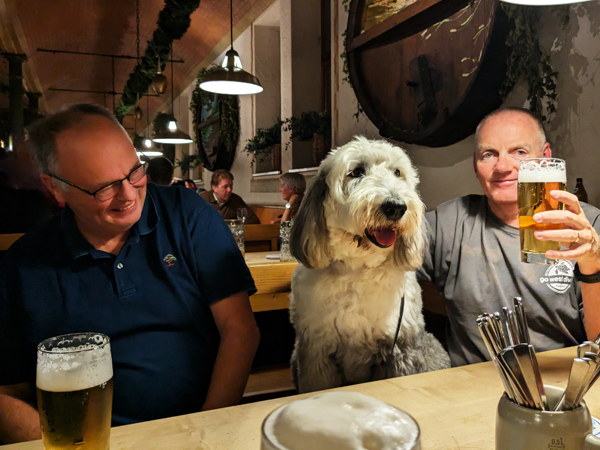
From here, we walked to Bavaria to eat. We had excellent meals in there as usual together with a couple of rounds of drinks. Regan was keen on going to Augustiner Bräustuben and we had just about decided to stay in there for the rest of the night. However, the service was terrible and we struggled to get a second drink so we paid and returned to the Augustiner-Keller instead. We had a few more in here to complete a very enjoyable day.
Wednesday 21st October I was awake by about 8:00 so went out to buy breakfast again. We left the hotel at about 10:30, bought a few provisions for our journey and then went up to the station to wait for our train to Berlin. We had booked 1st Class tickets and had most of the 1st Class carriage to ourselves as the train pulled out of the Hauptbahnhof on time at 11:18. Roz was feeling a bit rough this morning but this was a very comfortable way of travelling and a relaxing way to spend the day.
A few people did get on and off but when we had about 90 minutes of the journey remaining, we were able to move to an empty six person compartment which was even more comfortable. We arrived at Berlin Gesundbrunnen at 16:00, about ten minutes ahead of schedule. We then had to wait until 17:44 for our next train into Poland. Roz spent most of that time with a coffee in McDonalds. I went for a couple of walks round the shopping centre that was next to the station and we both went back in to get more food and drink for the next train.
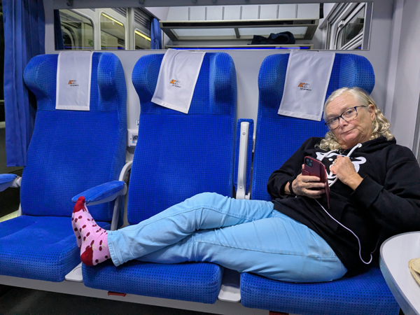
We went down to the platform at about 17:20 and the train pulled in about ten minutes later. The 1st class carriage of this train was also fairly empty and we had a compartment to ourselves again. The train departed on time. It also arrived in Poznań Główny on time at 20:26. Although we were both very tired, it had not been too bad a journey.Shakshuka (me) and
After coming out of the station we used the Bolt app to call a taxi. We had a wait of about ten minutes and then another ten minutes driving to get to the Ibis Poznań Stare Miasto. Neither of us felt like doing anything so after unpacking and showering, we had an early night.
Thurday 22nd October - Lech Poznań v Sunderland The weather forecast for today was terrible with constant heavy rain predicted. However, when we woke up, it was grey and drizzly but no-where near as bad as it could have been. We decided that we may as well go out for breakfast and have a look round the old town before it got any worse. It was about a mile from where we are staying to Stary Rynek, the main square in the centre of the old town. We went into the first place we saw with indoor seating (Czarnomorka) and had very good breakfasts consisting of Shakshuka (me) and Poznań Scrambled Eggs (Roz).
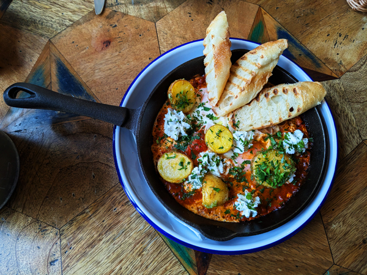
We went for a bit of a walk to find our way around and look at some of the sights but did not go too far as we know the weather will be better tomorrow. It all seemed quite a nice place with plenty of eating and drinking options. We tried without success to find a cheap ATM and then walked down what looked like the main shopping street and back to the hotel.
After a couple of hours in the hotel, we went out again at 3pm by which time the rain had stopped. We had a stop to look at the goat statue and then headed into the main square which was all quite lively as expected. We wanted to go to one of the several craft beer bars for a drink but none were open until 4pm so we went to Pyšna Chałupa, a Czech bar at the quieter end of the square while we waited. We then walked to Ministerstwo Browaru. We had one drink in there and ordered a Bolt taxi to the ground. We did not time this very well as we were leaving the centre of Poznań in rush hour and the journey took longer than it should have but by 17:20, we were at the ground.
We had "Silver Hospitality" tickets for this game and were not really sure what to expect. We found our way to the Silver entrance and were let in with minimal ticket checks. No-one was interested in the fact that we were obviously English. We made our way into the main hospitality room and started straight away on the complimentary food and beer. We had expected very basic food but there was a good selection and what was there, was very good. We had a couple of drinks and made our way to our seats just before kick-off.
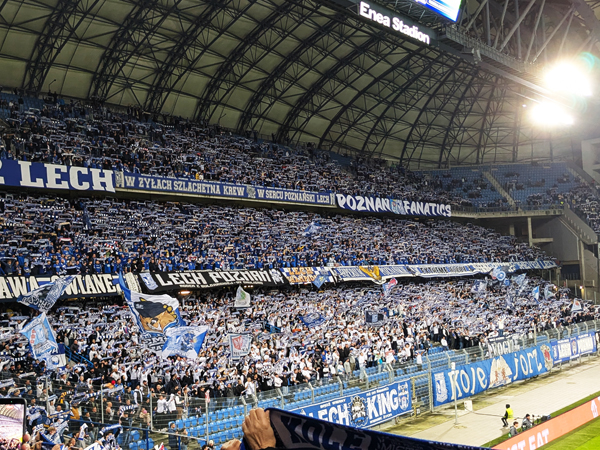
We were stood very close to the stand housing the Poznań Ultras. We had never seen anything quite like this at any football match we had ever been to. The noise was constant throughout the whole game and it was a very spectacular sight. Our stand was a mixture of Lech and Sunderland fans although our row seemed to be mainly Sunderland. There were no issues at all with us being in amongst their fans. Most of the people around us had bought drinks in with them. We did not initially but did get ourselves a couple of beers half way through the first half.
The game was better than last week's but Sunderland really should have won it in the first half. The draw was a bit of a disappointment but still not a bad result and a very entertaining 90 minutes overall.
Once the game was finished, it was back into the bar where we had another two hours of complimentary beer. During that time the amount of people started thinning out. We talked to a couple from our hotel for some of the time until they left. We had a couple more and departed an hour or so later at 10:30 before getting a Bolt back to the hotel. An excellent day out!!
Friday 23rd October As predicted, the weather was much better today. We went out at about 10:00 and returned to the same restaurant in the square for breakfast. We had another wander round the square which all looked a lot nicer than it had done yesterday due to the blue sky and the lack of football fans and police!
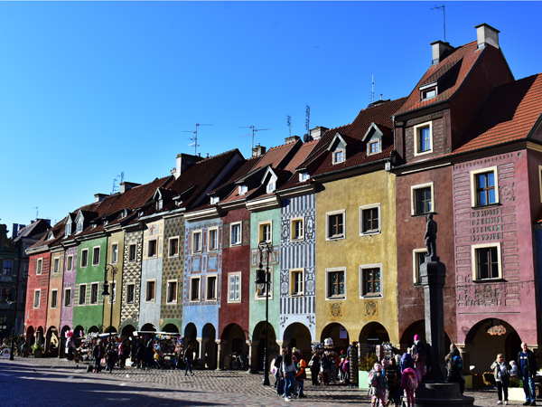
After this, we started on a couple of hours of sight-seeing. We saw both the Imperial and Royal castles and then walked out to Cathedral Island and had a look round the cathedral. It is a very nice town to walk around.